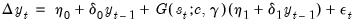
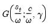
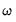
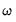

|
|
|


 and
and  match, the estimates of the smoothing function slope parameter does not match. This difference stems from the fact that like some authors, Martin, Hurn, and Harris estimate the threshold weighting function employing a scaling factor  equal to the sample standard deviation of the threshold variable. The resulting parameterization is given by
match, the estimates of the smoothing function slope parameter does not match. This difference stems from the fact that like some authors, Martin, Hurn, and Harris estimate the threshold weighting function employing a scaling factor  equal to the sample standard deviation of the threshold variable. The resulting parameterization is given by and its corresponding standard error by the standard deviation of the threshold, or we can modify the existing specification to account for the weighting.
and its corresponding standard error by the standard deviation of the threshold, or we can modify the existing specification to account for the weighting. results by either by creating a new scaled threshold series, or by directly entering the scaled expression
results by either by creating a new scaled threshold series, or by directly entering the scaled expression do not.We can obtain equivalent results for
do not.We can obtain equivalent results for  by multiplying by the standard error by the standard deviation of the threshold.
by multiplying by the standard error by the standard deviation of the threshold.